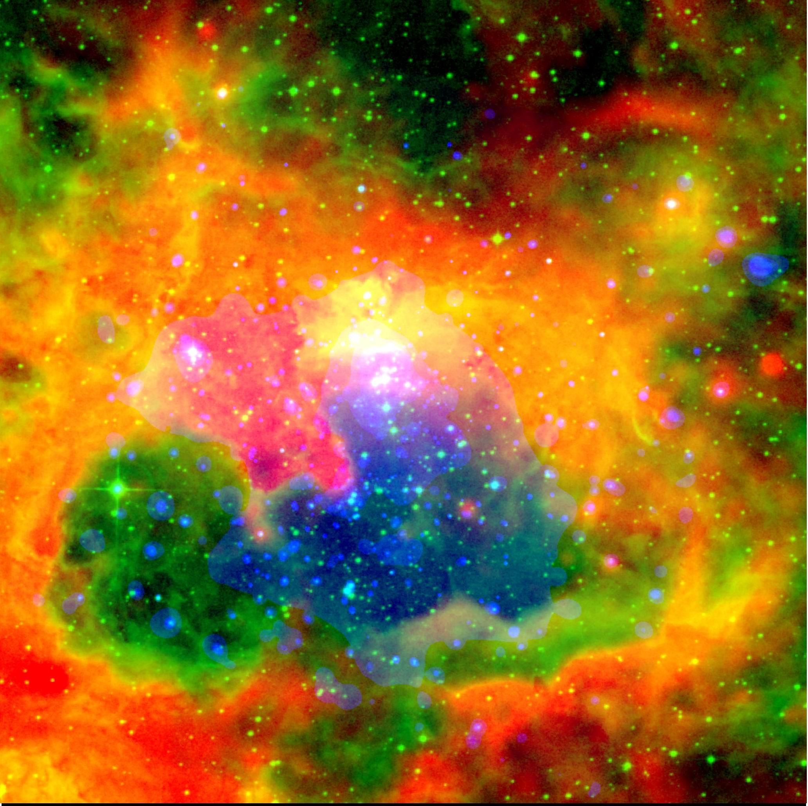

Massive star forming regions (MSFRs) constitute ``mini starbursts''. The winds from OB stars (and consequently the supernovae) affect the natal cloud and ISM by both returning processed materials and kinematically creating cavities, therefore contributing to the evolution of our galaxy. The formation of new generations of low mass stars is triggered by the presence of massive stars. However, MSFRs are typically located at large distances (>1 kpc), where traditional optical and IR studies suffer from extinction, bright nebulosity, and heavy contamination from field stars. Chandra X-ray Observatory opens a new window to study MSFRs by offering superior spatial resolution, sensitivity, and a broad bandpass while simultaneously providing coordinates, lightcurves, and spectra of hundreds of young stars in each MSFR. The Chandra images routinely penetrates Av>100 mag of extinction, with little confusion or contamination from old foreground and background stars, revealing the young stellar populations even when they are embedded.
The focus of my current research is studying the X-ray emitting young stellar populations in the Galactic MSFRs with Chandra observations. I am actively working with the Chandra Advanced CCD Imaging Spectrometer (ACIS) team, analyzing ACIS observations of MSFRs, characterizing individual X-ray point sources and the population, and examining the optical/IR properties of a large number of previously uncataloged young stars in these regions for further follow-up.
I have led a Chandra study of the massive star forming complex NGC 6357 and the young open cluster Pismis 24 (Wang et al. 2007a). In the ongoing study of the Rosette star-forming complex (Wang et al.2007b,2007c), we have obtained X-ray image mosaic covering the ionizing cluster, the interface between the photoionized gas and the cold neutral material, and small embedded clusters in the dense molecular cloud.
Following the discovery of a large sample of X-ray-selected young stars, I will change gears to characterize their circumstellar disks in infrared (IR) with the Spitzer Space Telescope in late 2007. The primary goal is to quantify how the wind and radiation dominated environment around the massive stars affects the disk properties of the lower mass stars.